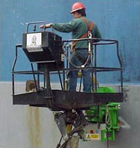

Services de réparation navale

La cale sèche (dont la capacité est de 100 000 tonnes de port en lourd) est munie de trois ponts roulants électriques montés sur rails pour charges lourdes:
- Grue à volée variable Krupp - capacité de 150 tonnes à 35 mètres et de 100 tonnes à 50 mètres. Équipée d'un crochet principal pouvant soulever un navire jusque sur terre pour permettre des travaux de réparation et de révision et d'un crochet secondaire d'une capacité de 15 tonnes habituellement utilisé pour transporter des matériaux sur le navire.
- Grue marteau Colby - capacité de 45 tonnes à 30 mètres. Cette grue a un crochet principal pouvant soulever 39 tonnes et un second crochet d'une capacité de 9 tonnes.
- Grue à volée variable Ebco - grue rapide d'une capacité de 30 tonnes à 35 mètres pouvant se déplacer tout le long de la cale.
La cale sèche d'Esquimalt possède également deux grues mobiles, une grue Grove d'une capacité de 20 tonnes et une grue Hyster à flèche abaissante d'une capacité de 12 tonnes.
Les services de grutage comprennent la fourniture d'une grue mobile et d'un chariot élévateur Hyster. Également disponibles : blocs Kee, coins, matériaux de remplissage et poutres.
Service de nettoyage de bateau Enviro Blast
Ces machines ont été développées spécifiquement pour être utilisées sur des surfaces horizontales et verticales en acier telles que les coques, les ponts et les réservoirs d'entreposage et de rétention. Voici comment elles fonctionnent :
Une matière abrasive nettoyante est "projetée" sur la surface à nettoyer par la force centrifuge d'une roue tournant à haute vitesse - assurant ainsi un nettoyage par abrasion. L'énergie utilisée à cette fin est suffisante pour que la matière abrasive rebondisse assez sur la surface de travail pour être captée par une gaine de récupération afin d'être réutilisée.
Source : Harbour & Shipping Journal, juillet 2002, volume 85, no 7